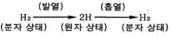
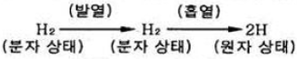
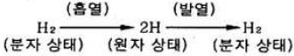
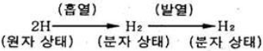
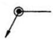
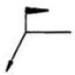
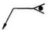
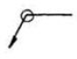
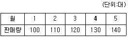

용접기능장 (2009-03-29 기출문제)
1과목: 임의구분
1. 정격 2차 전류가 200A인 용접기로 용접전류 160A로 용접을 할 경우 이 용접기의 허용사용률은? (단, 용접기의 정격사용률은 40%임)
- 62.5%
- 6.25%
- 0.625%
- 50%
(정답률: 74%)

2. 연강용 피복 금속 아크 용접봉의 종류 중 철분산화철계에 해당 되는 것은?
- E4324
- E4340
- E4326
- E4327
(정답률: 80%)
3. 강괴, 강편, 슬래그 기타 표면의 흠이나 주름, 주조결함, 탈탄층 등을 제거하는 방법으로 가장 적합한 가공법은?
- 가스 가우징(gas gouging)
- 스카핑(scarfing)
- 분말 절단(powder cutting)
- 아크 에어 가우징(arc air gouging)
(정답률: 84%)
4. 가스의 흐름에 대한 용어의 설명 중 틀린 것은?
- 역류는 아세틸렌가스가 산소쪽으로 흘러들어 가는 현상
- 역화는 팁 끝이 모재에 닿아 팁의 과열 등으로 팁속에서 폭발음이 나며 불꽃이 꺼졌다가 다시 생기는 현상
- 역류는 산소가 아세틸렌가스 발생기 안으로 흘러 들어가는 현상
- 인화는 팁 끝이 순간적으로 막히게 되면 가스의 분출이 나빠지고 혼합실까지 불꽃이 들어가는 현상
(정답률: 65%)
5. 산소-아세틸렌을 사용한 수동절단시 팁 긑과 연강판 사이의 거리는 백심에서 약 몇 mm정도가 가장 적당한가?
- 0.5 - 1.0
- 2.5 - 3.5
- 1.5 - 2.0
- 3.4 - 4.5
(정답률: 75%)
6. 아크 절단법의 종류에 해당 되지 않는 것은?
- TIG 절단
- 분말 절단
- MIG 절단
- 플라스마 절단
(정답률: 85%)
7. 용접의 단점(檀點) 설명으로 가장 관계가 먼 것은?
- 용접부는 응력 집중에 극히 민감하다.
- 용접부에는 재질의 변형이 생긴다.
- 재료의 두께에 제한을 받으며 이음 효율이 낮다.
- 용접부에는 잔류응력이 존재한다.
(정답률: 80%)
8. 프로판가스가 연소할 때 몇 배의 산소를 필요로 하는가?
- 2
- 2.5
- 3
- 4.5
(정답률: 50%)
9. 산소ㆍ아세틸렌 용기의 취급시 주의사항으로 가장 거리가 먼 것은?
- 운반시 충격을 금지한다.
- 직사광선을 피하고 50℃이하 온도에서 보관한다.
- 가스 누설 검사는 비눗물을 사용한다.
- 저장실의 전기스위치, 전등 등은 방폭 구조여야 한다.
(정답률: 78%)
10. 연강용 피복금속아크 용접봉의 피복제 작용이 아닌 것은?
- 아크를 인정하게 하고, 스패터의 발생을 적게한다.
- 중성 또는 환원성 분위기로 대기 중으롭무터 융착 금속을 보호한다.
- 용융금속의 용적을 미세화하여 용착 효율을 높인다.
- 용융점이 높은 적당한 정성의 무거운 슬래그를 만든다.
(정답률: 78%)
11. 교류 용접기에서 2차 무부하 전압 80V, 아크전압 30V, 아크전류 300A라고 하면 역률은 약 몇 %인가? (단, 용접기의 2차측 내부손실(등손, 철손, 그 밖의 손)은 4kW로 한다.)
- 69
- 54
- 48
- 26
(정답률: 48%)
12. 용접 구조물 설계상 주의할 사항으로 가장 거리가 먼 것은?
- 이음의 역학적 특징을 고려하여 구조상 불연속부가 없도록 한다.
- 용접 치수는 강도상 필요한 치수 이상으로 충분하게 한다.
- 용접 이음의 교차와 집중을 피한다.
- 용접성 및 노치인성이 우수한 재료를 사용한다.
(정답률: 80%)
13. 가스 절단시 절단속도에 관한 설명 중 틀린 것은?
- 절단속도는 절단산소의 압력이 낮고 산소 소비량이 많을수록 증가한다.
- 모재의 온도가 높을수록 고속절단이 가능하다.
- 다이버전트 노즐을 사용하면 절단속도를 20~25%증가시킬 수 있다.
- 절단 속도는 절단 산소의 분출 상태와 속도에 따라 영향을 받는다.
(정답률: 77%)
14. 피복 금속 아크 용접법으로 다층용접을 할 때, 첫번째 패스를 저수소계 용접봉을 사용하는 가장 큰 이유는?
- 위빙을 하지 않아도 좋기 때문이다.
- 수소와 잔류응력에 기인하는 균열을 방지하기 때문이다.
- 비드 외관을 좋게 하기 때문이다.
- 가접을 하지 않아도 좋기 때문이다.
(정답률: 81%)
15. 아크용접 전원의 외부 특성으로 부하전류 증가시 단지 전압은 낮아지는 특성을 나타내며, 아크를 안정하게 유지시키는 특성은?
- 수하특성
- 정전압특성
- 동전류특성
- 역극성특성
(정답률: 67%)
16. 불활성가스 텅스텐 전극(GTAW) 아크 용접에서 텅스텐 극성에 따른 용입 깊이를 가장 적절하게 표시한 것은?
- DCSP ＞ AC ＞ DCRP
- DCRP ＞ AC ＞ DCSP
- DCRP ＞ DCSP ＞ AC
- AC ＞DCSP ＞ DCRP
(정답률: 62%)
17. 원자 수소 아크 용접은 수소의 변화에 의하여 방출되는 열을 이용하여 수소가스 분위기내에서 용접이 이루어지는데, 용접할 때 수소의 변화 상태가 맞는 것은?




(정답률: 55%)
18. 탄산가스 아크 용접 작업에서 용접 진행방향에 대한 토치 각도에 따라 전진법과 후진법으로 구분하는데, 전진법에 대해 설명한 것 중 틀린 것은?
- 토치각은 용접 진행 반대쪽으로 15~20°로 유지하는 것이 좋다.
- 용접선이 잘 보이므로 운봉을 정확하게 할 수 있다.
- 비드 높이가 높고, 폭이 좁은 비드를 얻는다.
- 스패터가 비교적 많다.
(정답률: 76%)
19. 가스용접작업의 안전 및 화재, 폭발 예방에 대한 설명 중 맞지 않는 것은?
- 가스용접 작업은 가연성 물질이 없는 안전한 장소를 선택한다.
- 작업중에는 소화기를 준비하여 사고에 대비한다.
- 산소는 지연성 가스이므로 산소병 내에 다른 가스와 혼합하여 사용한다.
- 산소병은 40℃ 이하 온도에서 보관하고 직사광선을 피해야 한다.
(정답률: 87%)
20. 저항 용접 조건의 3대 요소로 가장 적절한 것은?
- 용접전류, 통전시간, 전극 가압력
- 용접전류, 유지시간, 용접전압
- 용접전류, 초기가압시간, 전극 가압력
- 용접전류, 정지시간, 전극 가압력
(정답률: 80%)
2과목: 임의구분
21. 불활성 가스 금속 아크(MIG)용접의 장점이 아닌 것은?
- 대체로 전자세 용접이 가능하다.
- 대체로 모든 금속의 용접이 가능하다.
- TIG용접에 비해 전류밀도가 낮아 용융속도가 느리다.
- 비교적 아름답고 깨끗한 비드를 얻을 수 있다.
(정답률: 71%)
22. CO2또는 MIG용접에서 아크 길이가 길어지면 어떠한 현상이 일어나는가?
- 전류의 세기가 커진다.
- 전류의 세기가 작아진다.
- 전압은 변화가 없다.
- 전압이 낮아진다.
(정답률: 56%)
23. 감전방지 대책으로 틀린 것은?
- 안전 보호구를 착용한다.
- 전격 방지기를 장치한다.
- 작업 후에 반드시 접지상태를 확인한다.
- 절연된 홀더를 사용한다.
(정답률: 84%)
24. 전기 저항열을 이용한 용접법은 어느 것인가?
- 전자빔 용접
- 일렉트로 슬래그 용접
- 플라즈마 용접
- 레이저 용접
(정답률: 77%)
25. 수동 TIG용접 장치가 아닌 것은?
- 토치
- 제어장치
- 냉각수 순환장치
- 후락스 호퍼
(정답률: 74%)
26. 경납땜의 설명으로 가장 적합한 것은?
- 용점이 650℃ 이하인 용가제(땜납)을 사용한다.
- 용점이 650℃ 이상인 용가제(은납, 황동납)을 사용한다.
- 용점이 450℃ 이하인 용가제(땜납)을 사용한다.
- 용점이 450℃ 이상인 용가제(은납, 황동납)을 사용한다.
(정답률: 64%)
27. 서브머지드 아크 용접에서 아크 전압이 낮으면 용입과 비드의 폭은 어떻게 되는가?
- 용입은 깊어지며, 비드 폭이 넓어진다.
- 용입은 얕아지며, 비드 폭이 넓어진다.
- 용입은 깊어지며, 비드 폭이 좁아진다.
- 용입은 얕아지며, 덧붙여진 비드가 생긴다.
(정답률: 40%)
28. 플라스마 아크 용접의 특징 설명으로 맞는 것은?
- 용입이 얕고 비드폭이 넓다.
- 용접 홈은 H형이면 되고 아크의 안전성 나쁘다.
- 아크의 방향성과 집중성이 좋고 용접속도가 빠르다.
- 용접부의 금속학적 기계적 성질이 좋고 변형이 크다.
(정답률: 65%)
29. 서브머지드 아크용접에 사용디는 용융형 플럭스(fused flux)는 원료광석을 몇 ℃로 가열 용융시키는가?
- 1300℃ 이상
- 800~1000℃
- 500~600℃
- 150~300℃
(정답률: 63%)
30. 실용금속 중에서 가장 가볍고 비강도가 Al합금보다 우수하므로 항공기, 자동차 부품에 이용되는 합금은?
- Pb 합금
- W 합금
- Mg 합금
- Ti 합금
(정답률: 47%)
31. 평로 제강법에서 탈산제로 사용되는 것은?
- 알루미늄분말
- 산화철
- 코크스
- 암모니아수
(정답률: 51%)
32. 주철의 성장을 방지하는 방법으로 옳지 않은 것은?
- C 및 Si 양을 증가 시킨다.
- Cr, Mn, Mo, V 등을 첨가하여 펄라이트 중의 Fe3C분해를 막는다.
- 편상흑연을 구상 흑연화 시킨다.
- 흑연의 미세화로서 조직을 치밀하게 한다.
(정답률: 54%)
33. 용접 후 열처리의 목적으로 관계가 먼 것은?
- 용접 잔류 응력 완화
- 용접 후 변형방지
- 용접부 균열방지
- 연성증가, 파괴인성 감소
(정답률: 74%)
34. 450℃까지의 온도에서 강도, 중량비가 높고 내식성이 좋아 항공기 엔진부품, 화학용기분야에 주로 사용되는 합금은?
- 망간합금
- 텅스텐합금
- 구리합금
- 티탄합금
(정답률: 67%)
35. 마텐자이트계 스테인리스강의 피복아크 용접시 발생하는 잔류웅력 과대 및 균열 발생을 방지하기 위해 예열을 실시하는데 이때 가장 적절한 예열온도 범위는?
- 100~200℃
- 200~400℃
- 400~600℃
- 600~700℃
(정답률: 33%)
36. 오스템퍼 처리 온도의 상한에서 조작하여 미세한 슬바이트상의 펄라이트 조직을 얻기 위해 실시하는 것으로 오스테나이트 가열온도에서 대략 500~550℃의 용융염욕 속에 담금질하여 항온변태를 완료시킨 다음 공냉하는 열처리법은?
- 템퍼링(tempering)
- 노멀라이징(normalizing)
- 패텐팅(patenting)
- 어닐링(annealing)
(정답률: 43%)
37. 일반 고장력강의 용접 시 주의사항으로 틀린 것은?
- 용접봉의 저수소계를 사용한다.
- 아크 길이는 가능한 짧게 유지한다.
- 기공발생을 막기 위해 전류를 낮게 하고 위빙은 용접봉 지름의 3배 이상으로 한다.
- 용접 시작점보다 20~30mm 앞에서 아크를 발생시켜 예열 후 용접 시작점으로 후퇴하여 시작점부터 용접한다.
(정답률: 70%)
38. 방식법 중 15~25% 황산액에서 산화물계의 피막을 형성하는 방법은?
- 알루마이트법
- 알루미나이트법
- 크롬산염법
- 하이드로날륨법
(정답률: 63%)
39. 쇼터라이징 또는 도펠-듀로(doppel-durro)법 이라 하며, 국부 담금질이 가능한 표면경화 처리법은?
- 화염 경화법
- 구상화 처리법
- 강인화 처리법
- 결정입자 처리법
(정답률: 70%)
40. 탄소강에서 탄소량이 증가할 경우 알맞은 사항은?
- 경도감소, 연성감소
- 경도감소, 연성증가
- 경도증가, 연성증가
- 경도증가, 연성감소
(정답률: 73%)
3과목: 임의구분
41. Cu와 Zn의 합금 및 이것에 다른 원소를 첨가한 합금으로 판, 봉, 관, 선 등의 가공재 또는 주물로 사용되는 것은?
- 주철
- 합금강
- 황동
- 연강
(정답률: 68%)
42. 다음 중 불변강의 종류에 해당 되지 않는 것은?
- 인바(inver)
- 엘린바(elinvar)
- 서멧(cermet)
- 플래티나이트(platinite)
(정답률: 64%)
43. 용접순서를 결정하는 기준으로 틀린 것은?
- 용접물의 중심에 대하여 항상 대칭으로 용접을 해 나간다.
- 수축이 작은 이음을 먼저 용접하고 수축이 큰 이음을 나중에 용접한다.
- 용접 구조물이 조립되어 감에 따라 용접 작업이 불가능한 곳이나 곤란한 경우가 생기지 않도록 한다.
- 용접구조물의 중립축에 대하여 용접 수축력의 모멘트의 합이 0(제로)이 되게 용접한다.
(정답률: 80%)
44. KSB 0⑤2에서 표기되는 용접부의 모양이 아닌 것은?
- S형
- K형
- J형
- X형
(정답률: 74%)
45. 용접에 이용되는 산업용 로봇(Robot)은 역할에 따라 크게 3개의 기능으로 구성하는데 해당 되지 않는 것은?
- 작업기능
- 송급기능
- 제어기능
- 계측인식기능
(정답률: 49%)
46. 꼭지각이 136°인 다이아몬드 사각추의 압입자를 시험하중으로 시험편에 압입한 후에 생긴 오목 자국의 대각선을 측정해서 환산표에 의해 경도를 표시하는 것은?
- 비커스 경도
- 마이어 경도
- 브리넬 경도
- 로크웰 경도
(정답률: 67%)
47. KSB 0⑤2에서 현장용접을 나타내는 기호는?




(정답률: 78%)
48. 용접할 경우 일어나는 균열 결함 현상 중 저온 균열에서 볼 수 없는 것은?
- 토 균열(Toe Crack)
- 비드밀 균열(Under Bead Crack)
- 루트 균열(Root Crack)
- 크레이터 균열(Crater Crack)
(정답률: 68%)
49. 측면 필릿 용접 이음에서 이론 옥두께를 ht, 필릿용접의 크기(다리길이)를 h라 할 때 이론 목두께를 구하는 식으로 옳은 것은?
- ht=hㆍtan90°
- ht=hㆍcos45°
- ht=hㆍcos90°
- ht=hㆍtan60°
(정답률: 70%)
50. 용접시 잔류응력을 경감시키는 시공법이 아닌 것은?
- 적당한 예열을 한다.
- 용착 금속량을 적게한다.
- 적절한 용착법(비석법 등)을 선정한다.
- 용접부의 수축을 억제한다.
(정답률: 63%)
51. 용접할 때 생기는 변형 중 면외 변형이 아닌 것은?
- 굽힘변형
- 좌굴변형
- 회전변형
- 나사변형
(정답률: 50%)
52. 지그(Jig)설계의 목적이 아닌 것은?
- 공정수가 늘어나고 생산능률이 향상된다.
- 제품의 정밀도가 증가한다.
- 경제적 생산이 가능하다.
- 불량이 적고 미숙련공도 작업이 용이하다.
(정답률: 80%)
53. 용접부의 시험에서 파괴시험이 아닌 것은?
- 형광침투시험
- 육안조직시험
- 충격시험
- 피로시험
(정답률: 63%)
54. 특수한 구면상의 선단을 갖는 해머(hammer)로 용접부를 연속적으로 타격해 잔류응력을 완화시키고 용접변형을 경감시키는 것은?
- 기계 응력 완화법
- 저온 응력 완화법
- 피닝법
- 응력제거 풀림법
(정답률: 75%)
55. 다음 [표]는 A자동차 영업소의 월별 판매실적을 나타낸 것이다. 5개월 단순이동평균법으로 6월의 수요를 예측하면 몇 대인가?

- 120
- 130
- 140
- 150
(정답률: 73%)
56. 다음 검사의 종류 중 검사공정에 의한 분류에 해당되지 않는 것은?
- 수입검사
- 출하검사
- 출장검사
- 공정검사
(정답률: 72%)
57. 다음 중 반즈(Ralph M. Barnes)가 제시한 동작경제의 원칙에 해당되지 않는 것은?
- 표준작업의 원칙
- 신체의 사용에 관한 원칙
- 작업장의 배치에 관한 원칙
- 공구 및 설비의 디자인에 관한 원칙
(정답률: 50%)
58. 품질관리 기능의 사이클을 표현한 것으로 옳은 것은?
- 품질개선-품질설계-품질보증-공정관리
- 품질설계-공정관리-품질보증-품질개선
- 품질재선-품질보증-품질설계-공정관리
- 품질설계-품질개선-공정관리-품질보증
(정답률: 49%)
59. 다음 중 계수치 관리도가 아닌 것은?
- c 관리도
- p 관리도
- u 관리도
- x 관리도
(정답률: 50%)
60. 부적합품률이 1%인 모집단에서 5개의 시료를 랜덤하게 샘플링할 때, 부적합품수가 1개일 확률은 약 얼마인가? (단, 이항분포를 이용하여 계산한다.)
- 0.048
- 0.⑤8
- 0.48
- 0.58
(정답률: 46%)
하지만 이 문제에서는 용접전류가 160A이므로, 이 용접기는 최대 사용 가능한 전류보다 적은 전류로 용접을 하고 있습니다. 따라서 이 용접기의 허용사용률은 (160A / 200A) x 100% = 80%입니다.
하지만 이 문제에서는 용접기의 정격 2차 전류가 200A이므로, 이 용접기는 최대 200A의 전류를 사용할 수 있습니다. 따라서 이 용접기의 실제 사용률은 (160A / 200A) x 100% = 80%가 아니라, (160A / 200A) x 40% = 32%입니다.
따라서 이 용접기의 허용사용률은 32%를 넘지 않으므로, 정답은 "62.5%"가 아니라 "50%"입니다.